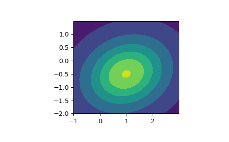

scipy.stats.multivariate_t¶
-
scipy.stats.multivariate_t= <scipy.stats._multivariate.multivariate_t_gen object>[source]¶ A multivariate t-distributed random variable.
The loc parameter specifies the location. The shape parameter specifies the positive semidefinite shape matrix. The df parameter specifies the degrees of freedom.
In addition to calling the methods below, the object itself may be called as a function to fix the location, shape matrix, and degrees of freedom parameters, returning a “frozen” multivariate t-distribution random.
- Parameters
- xarray_like
Quantiles, with the last axis of x denoting the components.
- locarray_like, optional
Location of the distribution. (default
0)- shapearray_like, optional
Positive semidefinite matrix of the distribution. (default
1)- dffloat, optional
Degrees of freedom of the distribution; must be greater than zero. If
np.infthen results are multivariate normal. The default is1.- allow_singularbool, optional
Whether to allow a singular matrix. (default
False)- random_state{None, int, np.random.RandomState, np.random.Generator}, optional
Used for drawing random variates. If seed is None the RandomState singleton is used. If seed is an int, a new
RandomStateinstance is used, seeded with seed. If seed is already aRandomStateorGeneratorinstance, then that object is used. Default is None.
Notes
Setting the parameter loc to
Noneis equivalent to having loc be the zero-vector. The parameter shape can be a scalar, in which case the shape matrix is the identity times that value, a vector of diagonal entries for the shape matrix, or a two-dimensional array_like. The matrix shape must be a (symmetric) positive semidefinite matrix. The determinant and inverse of shape are computed as the pseudo-determinant and pseudo-inverse, respectively, so that shape does not need to have full rank.The probability density function for
multivariate_tis\[f(x) = \frac{\Gamma(\nu + p)/2}{\Gamma(\nu/2)\nu^{p/2}\pi^{p/2}|\Sigma|^{1/2}} \exp\left[1 + \frac{1}{\nu} (\mathbf{x} - \boldsymbol{\mu})^{\top} \boldsymbol{\Sigma}^{-1} (\mathbf{x} - \boldsymbol{\mu}) \right]^{-(\nu + p)/2},\]where \(p\) is the dimension of \(\mathbf{x}\), \(\boldsymbol{\mu}\) is the \(p\)-dimensional location, \(\boldsymbol{\Sigma}\) the \(p \times p\)-dimensional shape matrix, and \(\nu\) is the degrees of freedom.
New in version 1.6.0.
Examples
>>> import matplotlib.pyplot as plt >>> from scipy.stats import multivariate_t >>> x, y = np.mgrid[-1:3:.01, -2:1.5:.01] >>> pos = np.dstack((x, y)) >>> rv = multivariate_t([1.0, -0.5], [[2.1, 0.3], [0.3, 1.5]], df=2) >>> fig, ax = plt.subplots(1, 1) >>> ax.set_aspect('equal') >>> plt.contourf(x, y, rv.pdf(pos))
Methods
``pdf(x, loc=None, shape=1, df=1, allow_singular=False)``
Probability density function.
``logpdf(x, loc=None, shape=1, df=1, allow_singular=False)``
Log of the probability density function.
``rvs(loc=None, shape=1, df=1, size=1, random_state=None)``
Draw random samples from a multivariate t-distribution.